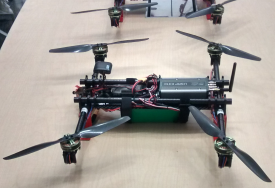
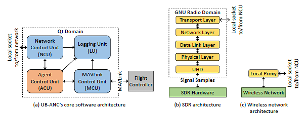
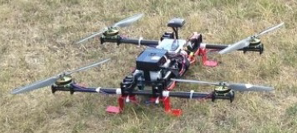
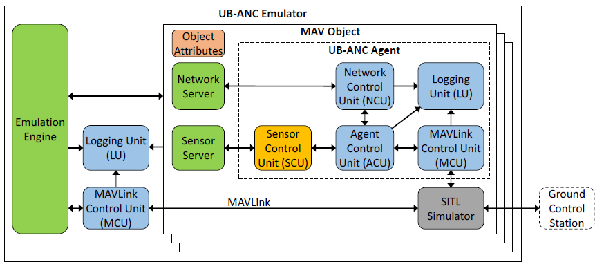
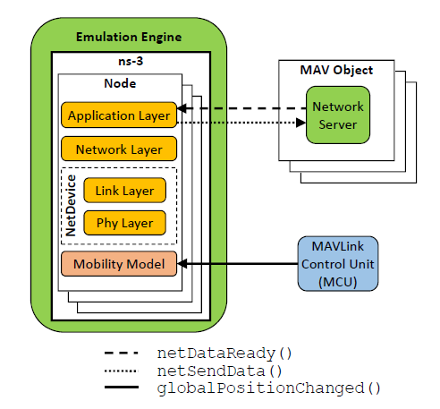
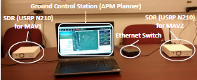
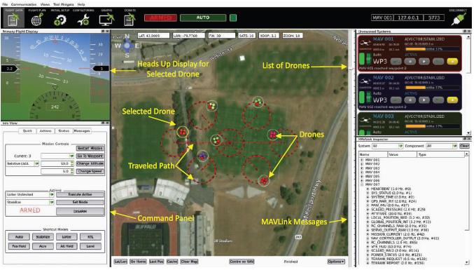
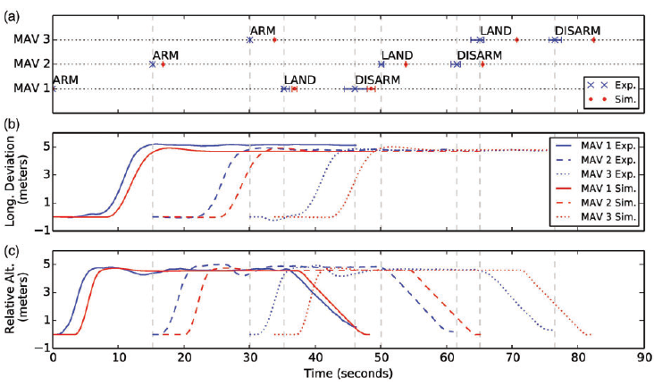
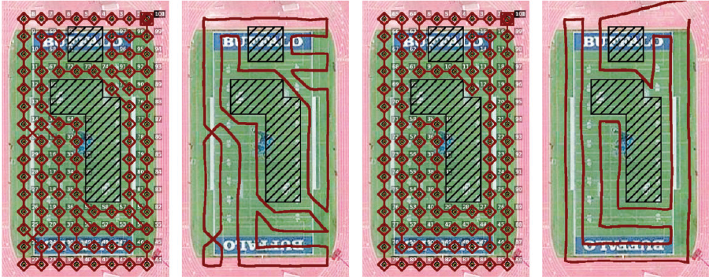

UB-ANC Drone: A Flexible Airborne Networking and Communications Testbed
Introduces the physical UB-ANC platform, including autonomous drones, onboard control, conventional networking, and SDR-based communication.
An Emulation Framework for Multi-Agent Drone Networks
UB-ANC Emulator was originally developed during the 2015–2019 period. Its documented environment uses Ubuntu 16.04, QGroundControl 3.2, and ns-3.27. Running the project on a modern Linux distribution may require dependency updates, patches, or the original Docker environment.
UB-ANC Emulator is an open-source software environment for designing, implementing, testing, and debugging missions involving one or more networked drones before moving to field experimentation.
It combines mission-planning logic, MAVLink-compatible flight control, software-in-the-loop simulation, sensing, data logging, ground-control visualization, wireless-network modeling, and optional integration with physical communication hardware.
The framework is designed to help researchers study communications, networking, robotics, autonomy, and multi-agent coordination as parts of one integrated cyber-physical system.

The physical UB-ANC platform combines autonomous flight control, onboard computing, mission-control software, and a reconfigurable software-defined radio for airborne networking and communication experiments.
Create multiple emulated drones, each with its own mission agent, flight-controller firmware, configuration, networking, and logging.
Uses MAVLink and software-in-the-loop flight-controller firmware that closely match the interfaces used on physical drones.
Lightweight flight and network models allow researchers to run larger multi-agent scenarios on conventional computers.
ns-3 integration supports protocol stacks, routing, wireless channels, interference, packet loss, throughput, and latency.
Emulated vehicles can be monitored through MAVLink-compatible ground-control applications such as APM Planner and QGroundControl.
Emulated agents may exchange traffic through physical radios, enabling software-defined radio and hardware-in-the-loop experiments.
Mission-planning software can move from emulation to real hardware with minimal modification.
Record vehicle position, flight state, MAVLink messages, network events, sensor measurements, and mission status.
The following sequence summarizes the normal execution flow from startup to mission logging.
The physical UB-ANC platform combines an autonomous vehicle, an embedded computer, a MAVLink-compatible flight controller, and a configurable wireless communication subsystem.
Its modular architecture separates mission logic from the underlying network and flight-controller technologies. This makes it possible to evaluate the same application using Wi-Fi, Zigbee, LTE, GNU Radio, or software-defined radio hardware.

The Agent Control Unit coordinates mission behavior through the Network Control Unit, MAVLink Control Unit, and Logging Unit. The communication interface can connect to GNU Radio and SDR hardware or to a conventional wireless network.
The experimental platform used in the emulator-validation studies included a custom multirotor frame, a Pixhawk flight controller, a Raspberry Pi onboard computer, power sensing, and a high-capacity battery.

Custom-built multirotor used for UB-ANC validation experiments, including the Pixhawk flight controller, Raspberry Pi onboard computer, sensing hardware, and battery system.
The emulator is organized around three central elements: the Emulation Engine, one MAV Object for each vehicle, and the UB-ANC Agent that implements mission behavior.

The Emulation Engine manages multiple MAV Objects. Each MAV Object contains the UB-ANC Agent, object attributes, network and sensor interfaces, logging, MAVLink control, and a software-in- the-loop flight-controller simulator.
| Component | Responsibility |
|---|---|
| Agent Control Unit (ACU) | Contains mission-planning logic and determines the actions the drone performs. |
| Network Control Unit (NCU) | Sends and receives information between agents, ground systems, network simulators, and external communication interfaces. |
| Sensor Control Unit (SCU) | Supplies the mission logic with simulated or physical sensor measurements. |
| MAVLink Control Unit (MCU) | Sends commands to and receives state information from a MAVLink-compatible flight controller. |
| Logging Unit (LU) | Records vehicle state, mission events, MAVLink messages, network traffic, and sensing information. |
| SITL Simulator | Runs the flight-controller firmware and vehicle dynamics without requiring physical flight-controller hardware. |
The default emulator prioritizes scalability. For network studies that require realistic packet-level behavior, UB-ANC can integrate with ns-3.
UB-ANC supplies agent behavior, mobility, and packet requests, while ns-3 models application, transport, network, link, physical, channel, mobility, and routing behavior.

Packet-transmission events, packet-delivery events, and vehicle position updates are exchanged between UB-ANC MAV Objects and their corresponding ns-3 nodes.
| Interface | Purpose |
|---|---|
netDataReady() |
Signals that a MAV Object has a packet ready for the network simulator. |
netSendData() |
Delivers a packet from the network simulator to the destination MAV Object. |
globalPositionChanged() |
Notifies the network simulator when an emulated drone changes position. |
UB-ANC supports progressive and mixed emulation. A researcher can emulate flight and mission behavior while routing communication through physical radio hardware.

Two emulated MAVs communicate through physical USRP N210 software-defined radios connected through an Ethernet switch, while their flight and mission behavior remain inside the emulator.
The original installation instructions recommend Ubuntu 16.04. The documented emulator version uses QGroundControl 3.2 and ns-3.27.
sudo apt-get update && sudo apt-get upgrade
sudo apt-get install build-essential \
libgl1-mesa-dev \
libsdl2-dev \
python-future \
libfontconfig1 \
dbus-x11 \
geoclue \
curl \
git \
netcat \
xvfbThe project provides a build script that downloads, compiles, and configures the original emulator environment.
cd ~
mkdir ub-anc
cd ub-anc
curl -sSL \
https://raw.githubusercontent.com/jmodares/UB-ANC-Emulator/master/script/build_emulator.sh \
| bashAfter installation, the emulator should be available at:
~/ub-anc/emulator/
Add the current user to the dialout group:
sudo usermod -a -G dialout $USER
The objects directory defines the emulated agents.
Each subdirectory represents one vehicle and follows this format:
mav_001
mav_002
mav_003
...
mav_250| File | Purpose |
|---|---|
agent |
Compiled mission executable for the corresponding drone. |
arducopter |
Software-in-the-loop flight-controller firmware executable. |
copter.parm |
Flight-controller parameter configuration. |
To create ten agents using the default object template:
cd ~/ub-anc/emulator
./setup_objects.sh 10
This creates mav_001 through
mav_010.
The default example uses the follower mission . New missions can be created from the UB-ANC Agent template .
agent.setup_objects.sh to create the required number of
agents.
cd ~/ub-anc/emulator
./start_emulator.shThe startup script launches the flight-controller instances, establishes emulator connections, and then starts each mission agent.

APM Planner displays the search area, active vehicles, traveled paths, selected vehicle status, command controls, and MAVLink messages during an emulated multi-drone mission.
Wait until the following messages appear before beginning a mission:
[XXX] Info: EKF2 IMU0 is using GPS
[XXX] Info: EKF2 IMU1 is using GPSUB-ANC Emulator was evaluated by comparing software emulation with real drone experiments.

Comparison of mission-event timing, longitude deviation, and relative altitude for a coordinated mission executed in both the emulator and the physical UB-ANC testbed.
UB-ANC has been used to study coverage-path planning for single and multiple drones. The associated research models energy consumption based on traveled distance and turning behavior.
Planning methods were evaluated through optimization, emulation, and physical drone experiments with virtual obstacles.

Planned and experimentally executed coverage paths around virtual obstacles, comparing a depth-limited search method with the energy-aware LKH-D approach.
QGroundControl, flight-controller, and ns-3 parameters can be passed
or changed by editing the start_emulator function inside
start_emulator.sh.
cd ~/ub-anc/emulator
./start_emulator.sh -cThe documented console-mode configuration uses AODV routing by default. Routing, propagation, gain, data rate, and logging settings can be adjusted in the startup script or associated ns-3 code.
The default startup script suppresses agent output by redirecting it
to /dev/null. This reduces overhead when running many
agents.
For debugging or experimental analysis, modify the startup script to display logs in real time or save them to files.
Docker provides the most practical way to reproduce the historical UB-ANC software environment.
docker build -t jmod/ub-anc-emulator:latest \
https://raw.githubusercontent.com/jmodares/UB-ANC-Emulator/master/script/Dockerfilexauth nlist $DISPLAY \
| sed -e 's/^..../ffff/' \
| xauth -f /tmp/.docker.xauth nmerge -
docker run -it \
--env DISPLAY=$DISPLAY \
--env XAUTHORITY=/tmp/.docker.xauth \
--volume /tmp/.X11-unix:/tmp/.X11-unix \
--volume /tmp/.docker.xauth:/tmp/.docker.xauth \
--device /dev/dri:/dev/dri \
--device /dev/snd:/dev/snd \
--volume $PWD/docker:/tmp/emulator \
--publish 5770:5770 \
--publish 5780:5780 \
jmod/ub-anc-emulator:latestdocker run -it \
--volume $PWD/docker:/tmp/emulator \
--publish 5770:5770 \
--publish 5780:5780 \
jmod/ub-anc-emulator:latestInside the container:
cp -r emulator/ /tmp/
cd /tmp/emulatorub-anc.
Ground-control applications connect to agent i using:
port = 10 * i + 5760| Agent | Port | Docker publish option |
|---|---|---|
| Agent 1 | 5770 |
--publish 5770:5770 |
| Agent 2 | 5780 |
--publish 5780:5780 |
| Agent 3 | 5790 |
--publish 5790:5790 |
| Agent N | 10 * N + 5760 |
--publish <port>:<port> |
UB-ANC-Emulator/
├── engine/ # Core emulator components
├── qgc_gui/ # Ground-control GUI integration
├── script/ # Build, setup, startup, and Docker scripts
├── README.md # Project documentation
├── UB-ANC-Emulator.pro # Qt project configuration
└── .gitignore| Directory or file | Purpose |
|---|---|
engine/ |
Core emulator logic, MAV Object management, inter-agent behavior, and system coordination. |
qgc_gui/ |
QGroundControl-derived graphical and ground-control components. |
script/build_emulator.sh |
Downloads, builds, and configures the historical emulator environment. |
script/start_emulator.sh |
Starts flight-controller instances, emulator components, and mission agents. |
script/setup_objects.sh |
Creates the requested number of mav_xxx
directories.
|
UB-ANC-Emulator.pro |
Qt project configuration used to build the emulator. |
Introduces the physical UB-ANC platform, including autonomous drones, onboard control, conventional networking, and SDR-based communication.
Presents the original emulator architecture, experimental validation, scalability study, and transition from emulation to physical drone systems.
Describes the ns-3 integration API and evaluates realistic mobility, wireless links, routing, and end-to-end communication.
Presents drone energy measurements and an energy-aware multi-drone coverage-path planning method.
Provides the most complete description of UB-ANC Emulator, including architecture, real-drone validation, USRP integration, ns-3 networking, sensed-parameter evaluation, and path planning.
Cite the main UB-ANC Emulator publication:
@inproceedings{modares2016ubanc,
title = {{UB-ANC Emulator}: An Emulation Framework for
Multi-Agent Drone Networks},
author = {Jalil Modares and Nicholas Mastronarde and
Karthik Dantu},
booktitle = {Proceedings of the IEEE International Conference
on Simulation, Modeling, and Programming for
Autonomous Robots},
year = {2016},
doi = {10.1109/SIMPAR.2016.7862404}
}@article{modares2019simulating,
title = {Simulating Unmanned Aerial Vehicle Swarms with
the UB-ANC Emulator},
author = {Jalil Modares and Nicholas Mastronarde and
Karthik Dantu},
journal = {International Journal of Micro Air Vehicles},
year = {2019},
doi = {10.1177/1756829319837668}
}
@inproceedings{modares2017realistic,
title = {Realistic Network Simulation in the UB-ANC
Aerial Vehicle Network Emulator},
author = {Jalil Modares and Nicholas Mastronarde and
Karthik Dantu},
booktitle = {IEEE INFOCOM Workshops},
year = {2017},
doi = {10.1109/INFCOMW.2017.8116354}
}
@inproceedings{modares2017planner,
title = {{UB-ANC Planner}: Energy Efficient Coverage
Path Planning with Multiple Drones},
author = {Jalil Modares and Farshad Ghanei and
Nicholas Mastronarde and Karthik Dantu},
booktitle = {IEEE International Conference on Robotics
and Automation},
year = {2017},
doi = {10.1109/ICRA.2017.7989732}
}
@misc{modares2015ubanc,
title = {{UB-ANC Drone}: A Flexible Airborne Networking
and Communications Testbed},
author = {Jalil Modares and Nicholas Mastronarde},
year = {2015},
note = {arXiv:1509.08346}
}UB-ANC Emulator is distributed under the GNU General Public License, version 3 or later. Refer to the repository license and source-code headers for the complete software terms.
The images displayed on this page originate from UB-ANC research publications and include an attribution block beneath every figure. The UB-ANC software license does not automatically apply to figures published in research papers.